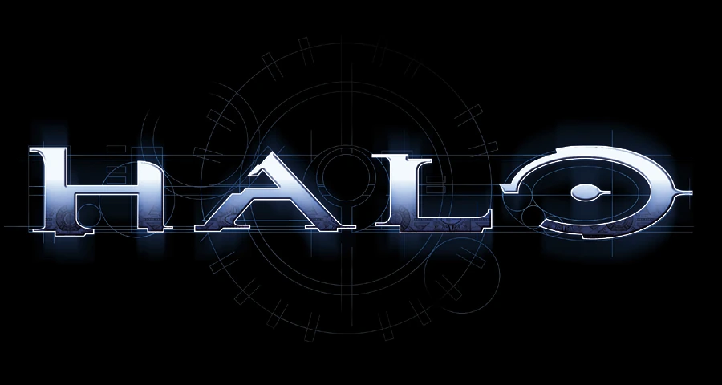
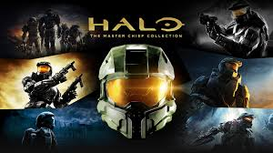
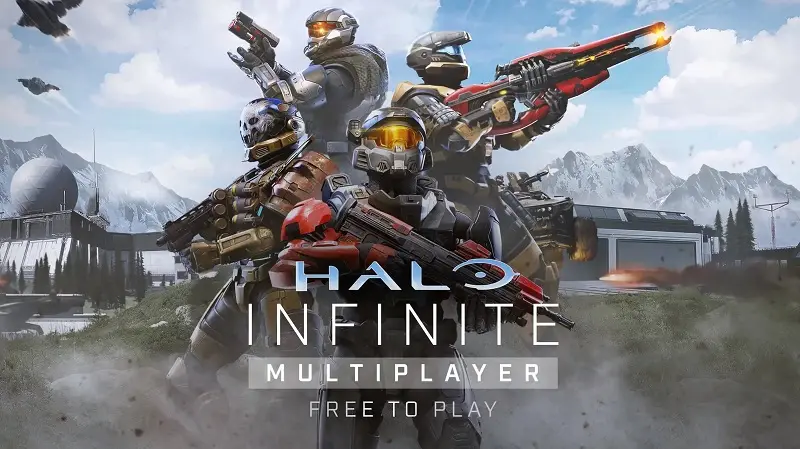
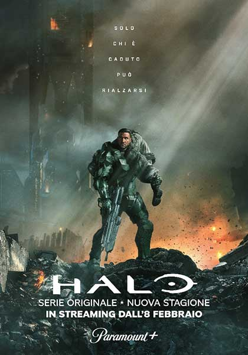

Trama

Halo è una saga di fantascienza militare che racconta la guerra tra l'umanità, rappresentata dal Comando Spaziale delle Nazioni Unite (UNSC), e l'Alleanza, una coalizione teocratica di specie aliene conosciuta come Covenant. Il conflitto ruota attorno agli antichi anelli chiamati Halo, gigantesche strutture orbitanti capaci di distruggere ogni forma di vita senziente nella galassia per fermare una minaccia ancora più terribile: il Flood, un parassita alieno letale.
Protagonista della saga è John-117, meglio noto come Master Chief, uno dei supersoldati Spartan-II, creati dall'UNSC per contrastare minacce ribelli ma poi divenuti essenziali nella guerra contro il Covenant. La trama si evolve in un intreccio complesso di battaglie epiche, misteri antichi e riflessioni sul destino dell’umanità. Oltre ai giochi, l’universo di Halo è arricchito da romanzi, fumetti e adattamenti cinematografici che approfondiscono la lore e i personaggi.
Giochi

La saga di Halo ha ridefinito il genere degli sparatutto in prima persona su console e conta numerosi titoli principali e spin-off:
- Halo: Combat Evolved (2001) - Il primo capitolo, che introduce Master Chief e l’anello Halo.
- Halo 2 (2004) - La guerra si espande sulla Terra e ci permette di controllare anche l'Arbiter.
- Halo 3 (2007) - La conclusione della trilogia originale, con la battaglia finale contro il Covenant e il Flood.
- Halo 3: ODST (2009) - Uno spin-off in cui si segue una squadra di soldati d’élite ODST a New Mombasa.
- Halo: Reach (2010) - Il prequel che racconta la caduta del pianeta Reach e le origini della lotta contro il Covenant.
- Halo 4 (2012) - L’inizio della saga del Reclamation con la minaccia dei Precursori e l’introduzione dei Prometeici.
- Halo 5: Guardians (2015) - La storia di Master Chief e Spartan Locke, con focus sulla crisi di Cortana.
- Halo Infinite (2021) - Ritorno alle radici con una nuova minaccia: gli Esiliati. Master Chief combatte per la libertà su Zeta Halo.
Halo: The Master Chief Collection - Una raccolta rimasterizzata dei titoli principali (Halo 1, 2, 3, 4, ODST e Reach) con supporto multiplayer e grafica migliorata, un must per i fan.
Oltre a questi titoli principali, la saga comprende anche spin-off strategici come Halo Wars e Halo Wars 2, e titoli mobile come Halo: Spartan Assault e Halo: Spartan Strike.
Multiplayer

Il multiplayer di Halo è una delle componenti più apprezzate della saga, offrendo esperienze di gioco in competizione e cooperazione. A partire dal primo Halo: Combat Evolved, il multiplayer ha evoluto le modalità di gioco, rendendo l’esperienza online una delle migliori nel suo genere.
Le modalità più famose includono Team Slayer, Capture the Flag e King of the Hill, tutte ottimizzate per garantire un bilanciamento perfetto tra giocatori. La modalità Forge, che permette ai giocatori di creare le proprie mappe, ha trasformato il multiplayer in un'esperienza sempre nuova e dinamica.
Inoltre, la serie ha sempre puntato su mappe varie e ambientazioni spettacolari, che spaziano dalle stazioni spaziali alle giungle alieni, dai deserti alle ambientazioni futuristiche. La comunità di Halo ha creato un'incredibile varietà di contenuti, tra cui mappe personalizzate, modalità di gioco e contenuti aggiuntivi.
Con Halo: The Master Chief Collection, il multiplayer ha raggiunto nuove vette, grazie alla presenza di tutti i titoli principali e l’integrazione con Xbox Live, permettendo sfide online contro giocatori di tutto il mondo.
Altro

Oltre ai giochi, Halo ha espanso il proprio universo narrativo con serie TV, film e romanzi.
Serie TV
Halo: The Series (2022 - in corso) è una produzione Paramount+ che esplora una linea narrativa alternativa rispetto ai giochi. La serie ha finora due stagioni, con un totale di 17 episodi, ed è in lavorazione la terza. Segue le gesta di Master Chief e approfondisce i rapporti tra umanità e Covenant.
Film e adattamenti
Tra i progetti più noti troviamo Halo: Nightfall (2014), miniserie prodotta da Ridley Scott con il personaggio di Jameson Locke, e Halo: Forward Unto Dawn (2012), che racconta la formazione di un giovane cadetto dell’UNSC.
Romanzi
La saga letteraria di Halo è vastissima e approfondisce eventi e personaggi mai visti nei giochi:
- Halo: The Fall of Reach - Racconta la genesi di Master Chief e la tragica caduta del pianeta Reach.
- Halo: The Flood - Narra gli eventi di Halo: Combat Evolved da diverse prospettive.
- Halo: First Strike - Si colloca tra Halo: Combat Evolved e Halo 2, mostrando operazioni cruciali dell’UNSC.
- Halo: Ghosts of Onyx - Introduce gli Spartan-III e il mondo segreto di Onyx.
- Halo: Silentium e la trilogia dei Precursori - Approfondisce la storia degli antichi e la creazione degli Halo.
Oltre 30 romanzi arricchiscono la lore di Halo, approfondendo personaggi come l'Arbiter, il Dottor Halsey e le battaglie cruciali della guerra umana-Covenant.